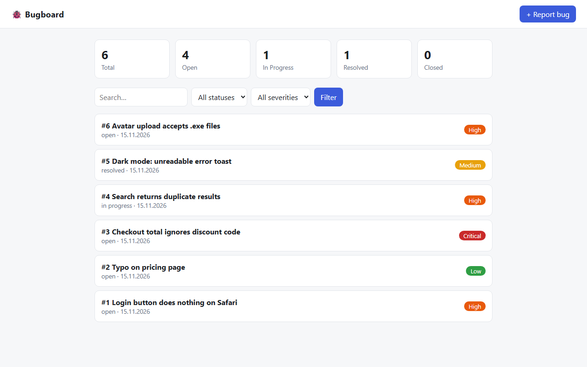
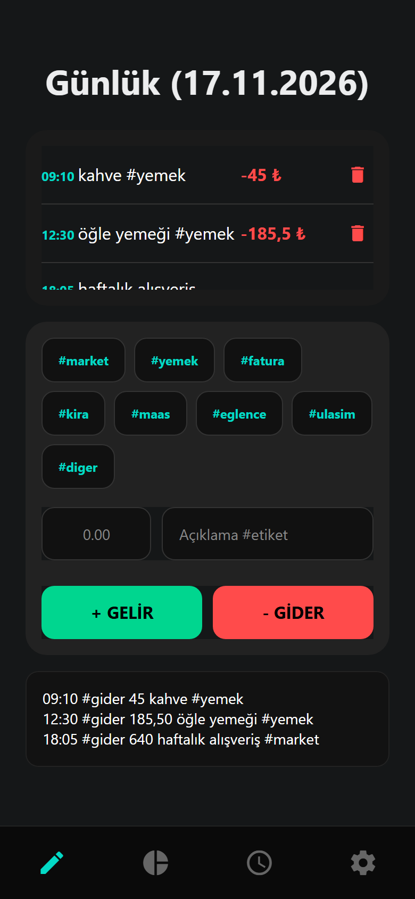
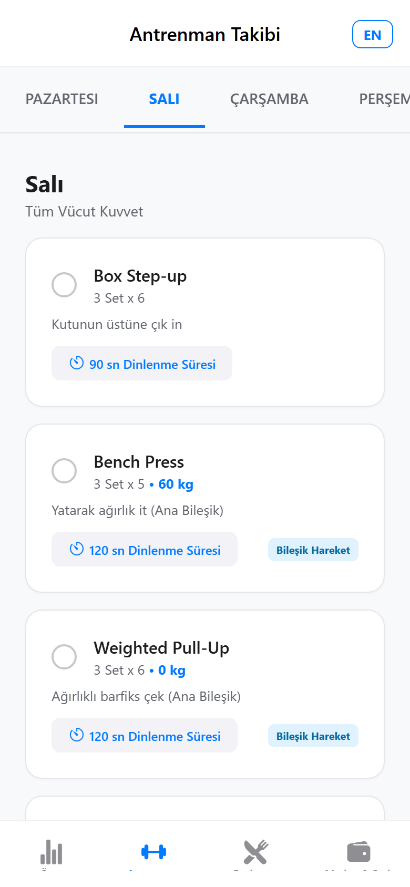

01 BUGBOARD
Full-stack bug tracker with a tested REST API. Next.js, Express, PostgreSQL; Jest + Newman tests, Docker and CI.
[ source -> ]> hello, i'm
DEVELOPER &
BUG HUNTER.
Backend & frontend developer from Türkiye. I build APIs, databases and the UIs on top of them, then I try to break them the way a curious user would.
// selected work / scroll ->

Full-stack bug tracker with a tested REST API. Next.js, Express, PostgreSQL; Jest + Newman tests, Docker and CI.
[ source -> ]
67 Playwright tests on 3 browsers, page objects, written bug reports, nightly CI and a live report.
[ source -> ]$ logsleuth app.log 12 lines | 3 WARN 4 ERROR | 1 FATAL 1. [FATAL] x1 connection pool exhausted (max <n>) 2. [ERROR] x3 payment provider timeout <uuid> 09:01 to 09:05 3. [WARN] x3 slow query <n>ms
Rust CLI that groups, counts and ranks the problems in your logs. CI gate, JSON output, binaries for 3 OSes.
[ source -> ]# messy notes
checkout crashes
when i apply coupon
expected: 10% off
actual: white screen
|
v
## Checkout crashes
Severity: high
Component: checkout
### Steps
### Expected
### ActualMessy notes in, reproducible bug report out. Offline rules or Claude with structured outputs, validated by Pydantic.
[ source -> ]
Notebook-style income & expense tracker. Type a line, tag it, see the totals. Phone and web, TR/EN.
[ source -> ]
12-week training plan with rest timers, nutrition macros, grocery budget and pantry. TR/EN.
[ source -> ]F1 +100 materials F2 +1 level F3 stats x2 F4 heal -------------- install.bat release.zip (CI)
Local mod for the game Brotato: hotkeys for materials, stats and levels, one-click Windows installer, release zips built by CI.
[ source -> ]// by the numbers
150+
automated tests across my projects: UI, API, unit and end-to-end.
// the journey
Turkish documentation for AI and developer-tool projects; several pull requests merged upstream.
Web/Multimedia Management and Webmaster. Full-stack, mobile and test automation projects on the side.
Kept people and machines working: troubleshooting, setup and clear reports of what broke and why.
Open to remote work, internships and collaboration. Have a bug that nobody can reproduce? Even better.
say hi on github ->